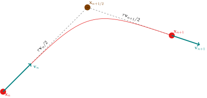
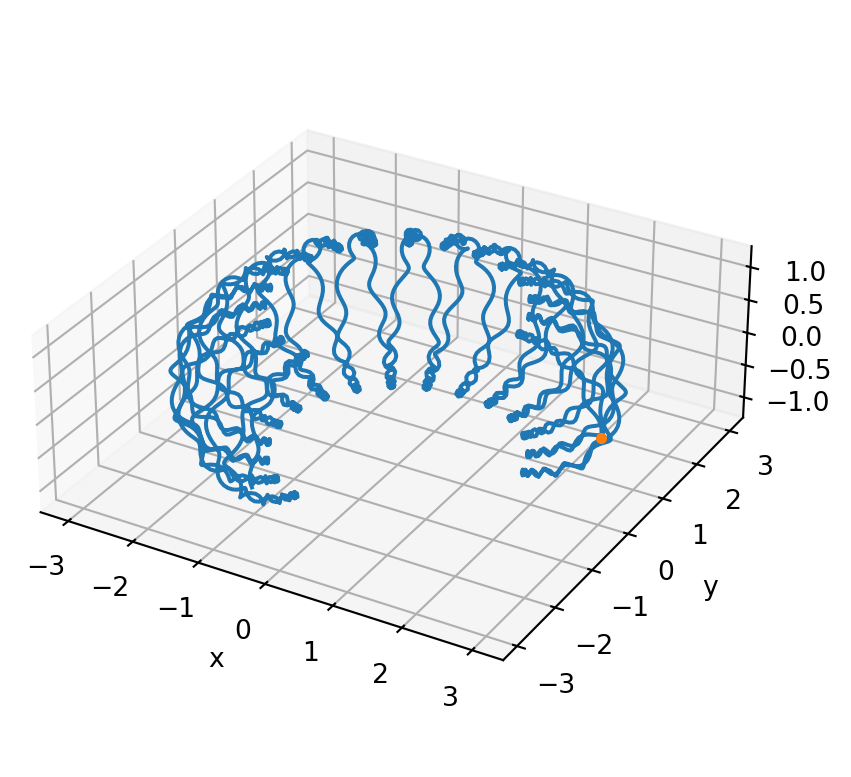
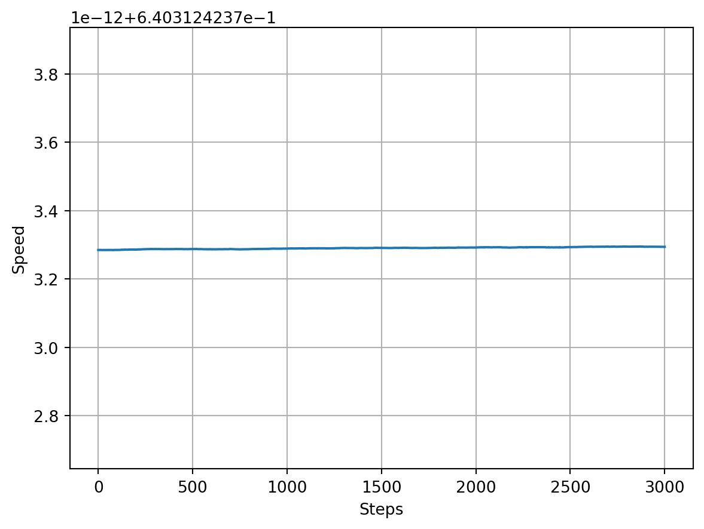
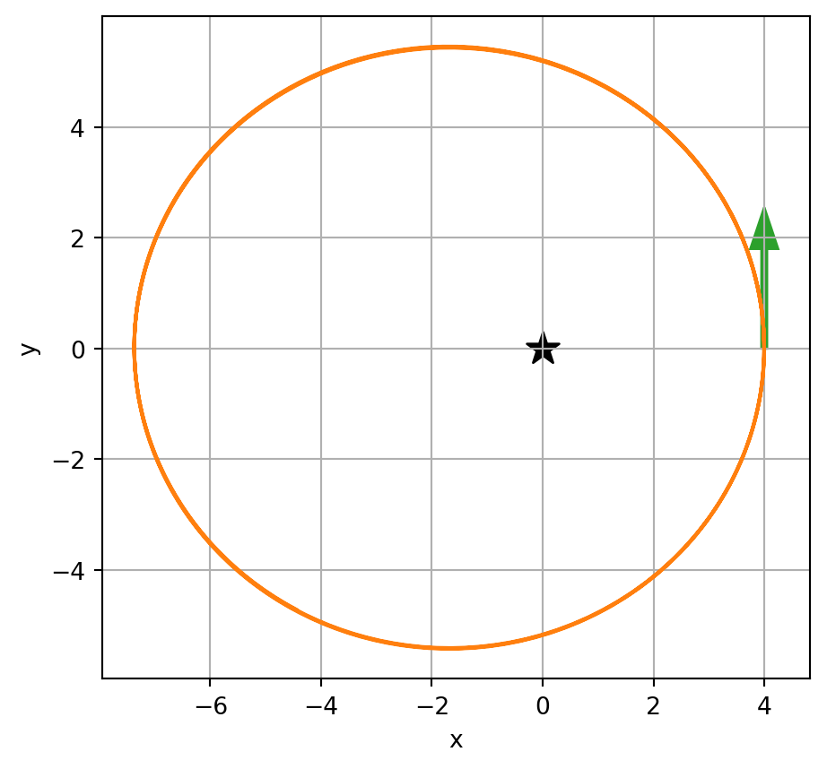
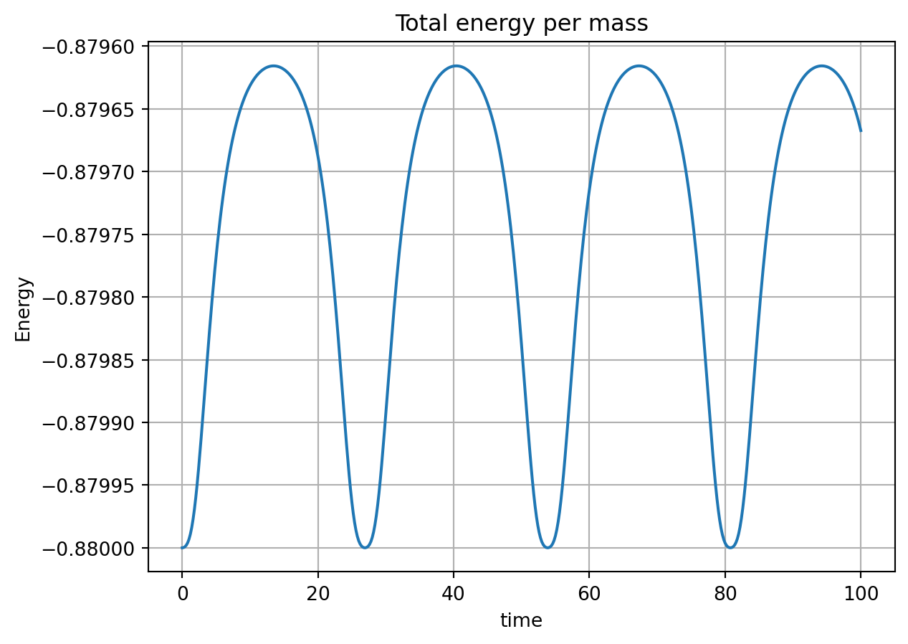
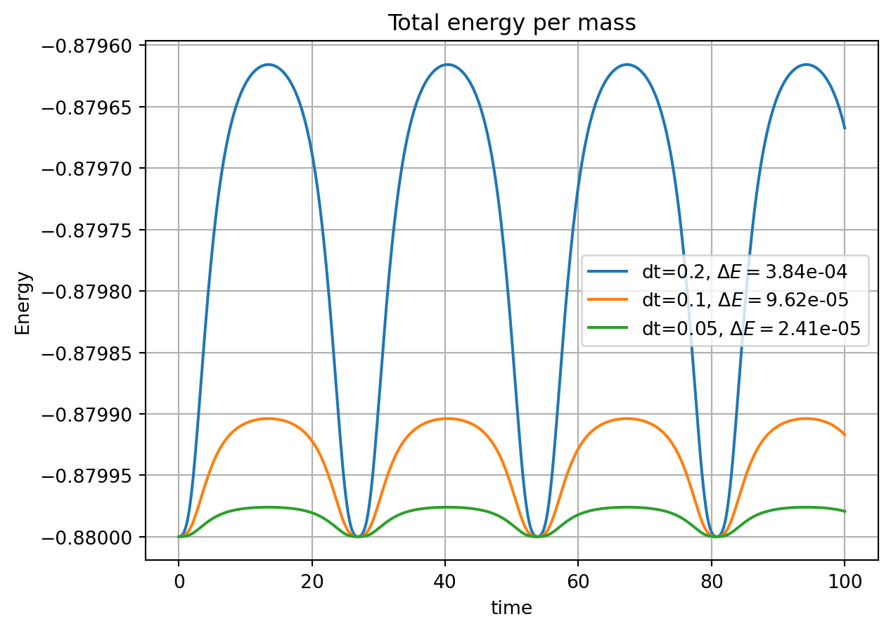

import numpy as np
import matplotlib.pylab as plt
q = -1 # particle charge
m = 1 # particle mass
B0 = 100 # field strength at unit distance on the z=0 plane
def dipole_field(x):
# Field of a magnetic dipole located at origin, pointing to the negative-z direction
# North pole is up, south pole is down.
# x : Three-element array of position
# B0 : field strength at unit distance from origin
rsq = (x**2).sum()
return -B0 / (rsq**(5/2)) * np.array([3*x[0]*x[2], 3*x[1]*x[2], (3*x[2]**2-rsq)])
def update(x, v, dt, field):
# the half-step
x1 = x + v*dt/2
# Magnetic field vector at the half-step
B = field(x1)
# Magnetic field matrix for cross-product
B_mat = np.array([
[0, B[2], -B[1]],
[-B[2], 0, B[0]],
[B[1], -B[0], 0]
])
# the left matrix
M1 = np.identity(3) - dt*q/(2*m)*B_mat
# the right matrix
M2 = np.identity(3) + dt*q/(2*m)*B_mat
# Solve for the next step velocity
v_next = np.linalg.solve(M1, np.dot(M2, v))
# Determine the next step position
x_next = x + (v_next + v)*dt/2
return x_next, v_nextProf. F. Curtis Michel (1934-2015) was the Andrew Hays Buchanan Professor of Astrophysics at Rice University. In a departmental seminar on March 3, 2005, he described a method for numerical solution of a differential equation of motion. He developed the method independently during his work on stellar magnetospheres, but he did not claim any originality. As far as I know, Prof. Michel did not publish this method. I recently found my notes from that that talk and I decided to write it up here.
The algorithm
Let \(\mathbf{x}\in \mathbb{R}^3\) be the position and \(\mathbf{v}\in \mathbb{R}^3\) be the velocity of a particle at a given time. The time evolution of these variables obey the following equation of motion:
\[ \begin{eqnarray} \dot{\mathbf{x}} &=& \mathbf{v}\\ \dot{\mathbf{v}} &=& \mathbf{a}(\mathbf{x},\mathbf{v}) \end{eqnarray} \]
where the acceleration \(\mathbf{a}(\mathbf{x},\mathbf{v})\) is a given function of position and velocity.
Suppose at time step \(t_n\) the position \(\mathbf{x}_n\) and velocity \(\mathbf{v}_n\) are given, and we want to estimate the \(\mathbf{x}_{n+1}\) and velocity \(\mathbf{v}_{n+1}\) at the next time step \(t_{n+1}\equiv t_n+\tau\). The scheme proposed by Michel is as follows:
Define an intermediate step \(\mathbf{x}_{n+\textonehalf}\):
\[ \mathbf{x}_{n+\textonehalf} \equiv \mathbf{x}_{n} + \frac{\tau}{2}\mathbf{v}_{n} \]
Then, the velocity is updated as:
\[ \begin{eqnarray} \mathbf{v}_{n+1} = \mathbf{v}_{n} + \tau \mathbf{a}\left(\mathbf{x}_{n+\textonehalf}, \frac{1}{2}(\mathbf{v}_{n+1} + \mathbf{v}_{n})\right) \end{eqnarray} \]
and the position is updated as:
\[ \begin{eqnarray} \mathbf{x}_{n+1} &=& \mathbf{x}_{n+\textonehalf} + \frac{\tau}{2}\mathbf{v}_{n+1} \\ &=& \mathbf{x}_{n} + \frac{\tau}{2}(\mathbf{v}_{n+1} + \mathbf{v}_{n}) \end{eqnarray} \]
Here is a representation of the scheme: 
The update equations have \(\mathbf{v}_{n+1}\) on the right-hand side, making this an implicit scheme. Implicit schemes have the additional burden of solving the equations for the values at step \(n+1\); however, they are generally more accurate and stable.
Application: Motion under magnetic field
A particular form of velocity-dependent acceleration is provided by the magnetic field:
\[ \mathbf{a}(\mathbf{x},\mathbf{v}) = \frac{q}{m}\mathbf{v}\times\mathbf{B}(\mathbf{x}) \]
where \(q\) and \(m\) are the electric charge and mass of the accelerated particle, respectively. Because of the cross product, the acceleration is always perpendicular to the velocity. Therefore, the speed and the kinetic energy of the particle is constant in time.
The velocity update equation becomes:
\[ \mathbf{v}_{n+1} = \mathbf{v}_{n} + \frac{\tau q}{2m}\left(\mathbf{v}_{n+1}+\mathbf{v}_{n}\right)\times \mathbf{B}\left(\mathbf{x}_n + \frac{\tau}{2}\mathbf{v}_n\right) \]
In order to solve for \(\mathbf{v}_{n+1}\), we write the cross product as a matrix-vector product: Let \(\mathbf{v} = [v_x, v_y, v_z]^\intercal\) and \(\mathbf{B} = [B_x, B_y, B_z]^\intercal\). Then
\[ \mathbf{v}\times\mathbf{B} = \begin{bmatrix} 0 & B_z & -B_y \\ -B_z & 0 & B_x \\ B_y & -B_x & 0 \end{bmatrix} \cdot \begin{bmatrix} v_x \\ v_y \\ v_z \end{bmatrix} := \mathbb{B}\mathbf{v} \]
Using the matrix \(\mathbb{B}_n\) constructed from \(\mathbf{B}\left(\mathbf{x}_n + \frac{\tau}{2}\mathbf{v}_n\right)\), the velocity update equation can be written as:
\[ \mathbf{v}_{n+1} = \left(\mathbb{I}+\frac{\tau q}{2m}\mathbb{B}_n\right)\mathbf{v}_n + \frac{\tau q}{2m}\mathbb{B}_n\mathbf{v}_{n+1} \] where \(\mathbb{I}\) is the 3-by-3 identity matrix. Now we can collect \(\mathbf{v}_{n+1}\) terms on the left: \[ \left(\mathbb{I}-\frac{\tau q}{2m}\mathbb{B}_n\right)\mathbf{v}_{n+1} = \left(\mathbb{I}+\frac{\tau q}{2m}\mathbb{B}_n\right)\mathbf{v}_n \]
It is straightforward to show that the determinant \[\det \left(\mathbb{I}-\frac{\tau q}{2m}\mathbb{B}_n\right) = \left(\frac{q\tau}{2m}\right)^2\left(B_x^2+B_y^2+B_z^2\right)\] is nonzero as long as there is a magnetic field present. Then, the matrix is invertible and the next step velocity can be solved as:
\[ \mathbf{v}_{n+1} = \left(\mathbb{I}-\frac{\tau q}{2m}\mathbb{B}_n\right)^{-1}\left(\mathbb{I}+ \frac{\tau q}{2m}\mathbb{B}_n\right)\mathbf{v}_n\]
The position vector is then updated using the current and next velocity vectors:
\[ \mathbf{x}_{n+1} = \mathbf{x}_{n} + \frac{\tau}{2}(\mathbf{v}_{n+1} + \mathbf{v}_{n}) \]
Kinetic energy preservation
Physically, a magnetic field does not change the kinetic energy of the particle. Its acceleration serves only to deflect the trajectory sideways. To see this, consider the work done on the particle by the magnetic field force
\[\begin{eqnarray} W &=& \int \mathbf{F}(\mathbf{x})\mathrm{d}\mathbf{x}\\ &=& \int \mathbf{F}(\mathbf{x})\cdot\mathbf{v}\mathrm{d}t\\ &=& \int (q\mathbf{v}\times \mathbf{B})\cdot\mathbf{v}\mathrm{d}t \end{eqnarray} \] The integrand is identically zero, because the force is prependicular to the velocity at all times. There is no work done on the particle, so its kinetic energy stays constant.
Michel’s method has the merit of perfectly preserving the kinetic energy under a magnetic field. Consider the velocity update formula:
\[ \mathbf{v}_{n+1} = \mathbb{M}\mathbf{v}_n \] where \[ \mathbb{M}:=\left(\mathbb{I}-\frac{\tau q}{2m}\mathbb{B}_n\right)^{-1}\left(\mathbb{I}+ \frac{\tau q}{2m}\mathbb{B}_n\right) \]
By explicit calculation we can show that the matrix \(\mathbb{M}\) is orthogonal, that is: \[ \mathbb{M}\mathbb{M}^\intercal=\mathbb{I}, \]
Orthogonal matrices transform vectors without changing their length. To see this, multiply both sides of the velocity update formula with \(\mathbf{v}_{n+1}^\intercal\).
\[ \begin{eqnarray} \mathbf{v}_{n+1}^\intercal\mathbf{v}_{n+1} &=& \mathbf{v}_{n+1}^\intercal\mathbb{M}\mathbf{v}_n\\ \mathbf{v}_{n+1}^\intercal\mathbf{v}_{n+1} &=& \mathbf{v}_n^\intercal\mathbb{M}^\intercal\mathbb{M}\mathbf{v}_n\\ |\mathbf{v}_{n+1}|^2 &=& \mathbf{v}_n^\intercal\mathbb{I}\mathbf{v}_n\\ |\mathbf{v}_{n+1}|^2 &=& |\mathbf{v}_{n}|^2\\ \end{eqnarray} \]
Simulation of a charged particle in a dipolar magnetic field
To illustrate the method, we will trace the path of a charged test particle under the field of a magnetic dipole fixed at the origin. The dipole moment is set to be in the negative-\(\mathbf{z}\) direction, imitating the Earth’s magnetic field.
Then, the magnetic field vector in cartesian coordinates is:
\[ \mathbf{B}(\mathbf{x}) = -\frac{B_0}{r^5} \begin{bmatrix} 3xz \\ 3yz \\ 3z^2-r^2 \end{bmatrix} \] where \(\mathbf{x}=[x,y,z]^\intercal\) and \(r^2 = x^2+y^2+z^2\). The coefficient \(B_0\) specifies the field strength at unit distance on the equatorial plane (\(z=0\) and \(r=1\)).
Let’s write a program to implement the schema for this particular field:
Note that the function update() can be used with any magnetic field that is defined as a function, as shown above.
We initialize the particle at \(\mathbf{x} = [3, 0, 0]^\intercal\) with velocity \(\mathbf{v} = [0, 0.4, 0.5]^\intercal\), and follow it for 3000 steps, with time step 0.1
x = np.array([3,0,0])
v = np.array([0,0.4,0.5])
dt = 0.1
t_steps = np.arange(0,3000*dt,dt)
# store intermediate steps:
x_steps = [x]
v_steps = [v]
for t in t_steps:
x, v = update(x,v,dt,dipole_field)
x_steps.append(x)
v_steps.append(v)The resulting path of the particle can then be visualized:
x_t = [_[0] for _ in x_steps]
y_t = [_[1] for _ in x_steps]
z_t = [_[2] for _ in x_steps]
ax = plt.figure().add_subplot(projection='3d')
ax.plot(x_t, y_t, z_t)
ax.scatter(x_t[0], y_t[0], z_t[0], c="C1", s=10)
ax.set_aspect("equal")
ax.set_xlabel("x")
ax.set_ylabel("y")
ax.set_zlabel("z");
The orange dot on the right side shows the initial position of the particle. The particle follows the familiar cyclotron, bounce, and drift modes as it moves under the influence of the dipole field. This path simulates an energetic electron in the radiation belt region of the Earth’s magnetosphere.
The kinetic energy of a charged particle moving under a purely magnetic field must stay constant. We can use this fact to check the stability of the scheme.
speed = [np.sqrt((_**2).sum()) for _ in v_steps]
print("Range of speed:", max(speed) - min(speed))
plt.plot(speed)
plt.grid()
plt.xlabel("Steps")
plt.ylabel("Speed");Range of speed: 1.0325074129013956e-14
The speed (magnitude of velocity) is extremely stable, as expected, despite the fact that the direction of velocity changes rapidly due to the system’s dynamics. The difference between largest and smallest values is comparable to the machine precision.
Application: Gravitational acceleration
Here we apply the method to the Kepler problem, 2-dimensional motion of a test body under the influence of a large mass. Here, the acceleration does not depend on velocity, only to position, so the update step is simpler.
Note that when the acceleration does not depend on the velocity, the scheme is not implicit anymore. The position and velocity updates can be combined in the following form:
\[ \mathbf{x}_{n+1} = \mathbf{x}_n + \tau\mathbf{v}_n + \frac{\tau^2}{2} \mathbf{a}(\mathbf{x}_n+\frac{\tau}{2}\mathbf{v}_n) \]
The gravitational acceleration of a body due to a mass \(M\) is
\[ \mathbf{a}(\mathbf{x}) = -\frac{GM}{|\mathbf{x}|^3}\mathbf{x} \]
where \(G\) is the gravitational constant. In the simulation, we will set \(GM=10\)1. The attracting mass is fixed at the origin.
1 Physically this corresponds to a very small asteroid, with a mass of about 150 million tonnes and a diameter of 100-200 meters. With this choice we have convenient position and velocity values of the order of 1.
def update(x, v, dt, acceleration):
x1 = x + v*dt/2 # intermediate step
v_next = v + dt*acceleration(x1)
x_next = x + (v_next + v)*dt/2
return x_next, v_next
GM = 10 # acceleration factor
def grav_acc(x):
rcube = ((x**2).sum())**(3/2)
return -GM/rcube * x
def iterate(x0, v0, dt, nsteps):
x = x0; v = v0;
x_steps = [x]
v_steps = [v]
t_steps = np.arange(0,nsteps*dt+dt,dt)
for step in range(nsteps):
x, v = update(x,v,dt,grav_acc)
x_steps.append(x)
v_steps.append(v)
x_steps = np.array(x_steps)
v_steps = np.array(v_steps)
return t_steps, x_steps, v_stepsInitialize the position and velocity, set a time step of 0.2 seconds, and follow for 500 steps.
x0 = np.array([4,0]) # initial position
v0 = np.array([0,1.8]) # initial velocity
t, x, v = iterate(x0, v0, dt=0.2, nsteps=500)Visualize the trajectory. The green arrow is the initial velocity, and the star at the origin indicates the attracting body.
plt.plot(x[:,0], x[:,1], c="C1")
plt.arrow(x[0,0], x[0,1], dx=v[0,0], dy=v[0,1], width=0.1, ec="C2", fc="C2", head_width=0.5)
plt.scatter(0,0,s=200,marker="*",c="k")
plt.grid(True)
plt.xlabel("x")
plt.ylabel("y")
plt.gca().set_aspect("equal")
Unlike the magnetic force, gravitational force does not keep the kinetic energy constant. However, energy conservation still applies. The sum of kinetic energy and the potential energy per mass should be constant:
\[ E = \frac{1}{2}|\mathbf{v}|^2 - \frac{GM}{|\mathbf{x}|} = \mathrm{constant} \]
Checking the energy from numerical solution tells us about the error of the algorithm:
def total_energy(x,v):
ke = 0.5*(v**2).sum(axis=1)
r = np.sqrt((x**2).sum(axis=1))
pe = -GM/r
return ke+pe
plt.plot(t, total_energy(x,v))
plt.title("Total energy per mass")
plt.xlabel("time")
plt.ylabel("Energy")
plt.grid();
The energy oscillates with a small amplitude, but there is no significant drift. With a smaller step size, the oscillations can be reduced:
x0 = np.array([4,0]) # initial position
v0 = np.array([0,1.8]) # initial velocity
t, x, v = iterate(x0, v0, dt=0.2, nsteps=500)
e = total_energy(x,v)
delta_e = max(e)-min(e)
plt.plot(t, e, label=f"dt=0.2, $\\Delta E=${delta_e:.2e}")
t, x, v = iterate(x0, v0, dt=0.1, nsteps=1000)
e = total_energy(x,v)
delta_e = max(e)-min(e)
plt.plot(t, e, label=f"dt=0.1, $\\Delta E=${delta_e:.2e}")
t, x, v = iterate(x0, v0, dt=0.05, nsteps=2000)
e = total_energy(x,v)
delta_e = max(e)-min(e)
plt.plot(t, e, label=f"dt=0.05, $\\Delta E=${delta_e:.2e}")
plt.title("Total energy per mass")
plt.xlabel("time")
plt.ylabel("Energy")
plt.grid()
plt.legend();
For every halving of the time step, the amplitude of oscillation \(\Delta E\) is reduced by a factor of 4. Even though we did not do a formal analysis, this observation suggests that Michel’s method is a second-order scheme, where the error reduces as the square of the step size: \(\epsilon \sim \mathcal{O}(\tau^2)\)